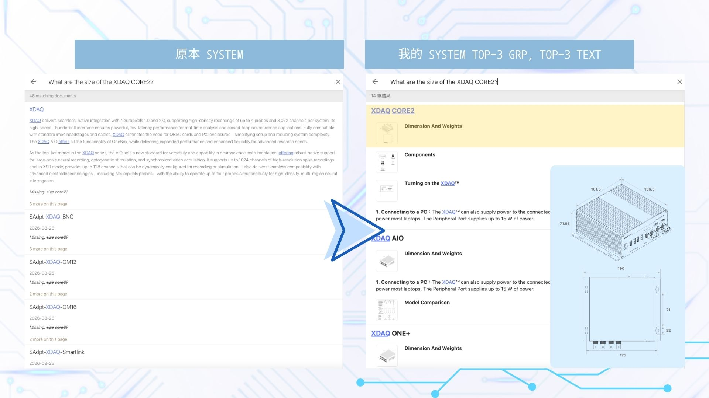

技術手冊語意搜尋引擎
User Manual Semantic Search Engine

展示內容：高精準度向量匹配與多模態技術手冊檢索
語意向量比對架構
打破傳統關鍵字搜尋易受精確字詞限制的痛點，將工程技術查詢與專業手冊轉化為高維度語意特徵，使工程人員與終端使用者能迅速對齊規格解答。
多模態與混合排序
結合圖文多模態特徵轉換，綜合文字關鍵特徵與深層語意維度進行全域排序調整，大幅降低查無解答的機率並提升重點段落的命中表現。
突破專業檢索痛點
消弭「科研問法」與「工程規格」間的語意鴻溝，徹底解決傳統搜尋因字詞微差導致無結果或混雜大量雜訊的困境。透過高維語意對齊規格，精準命中解答，顯著釋放人工諮詢的支援成本。
端側輕量化即時部署
摒除對昂貴雲端伺服器的重度依賴，將微型化模型與向量資料庫直接內嵌於使用者端運作。背景僅需 2~3 秒預載即可達到毫秒級即時響應，同時兼顧資料隱私保護與零伺服器維護開銷。
系統設計與評估流程
手冊特徵結構化
針對技術手冊建立章節分塊機制，並將介面圖與接線圖轉換為高維特徵標註，完善非結構化技術文檔的檢索完整性。
模型微調與選型
評估多組輕量化 Embedding 模型，導入專業領域詞彙進行微調優化，使模型適應科研與工程術語的細緻語意差異。
多源特徵動態聚合
整合字面索引與語意向量的多維評分機制，消除重複碎片資訊並聚合上下文關聯，實現即時且精確的搜尋定位。